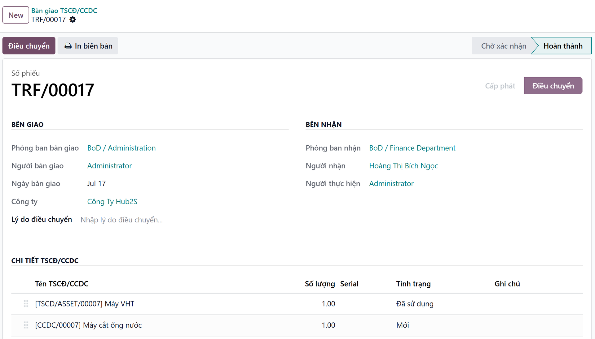
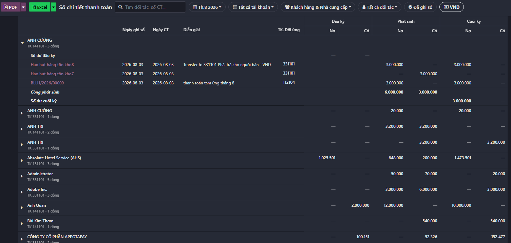

Giải pháp Kế toán Việt Nam trên Odoo.
Vietnamese accounting solution on Odoo.
Khởi tạo Khách hàng/Nhà cung cấp qua MST
Create Customers/Vendors via Tax Code
[VI]: Chỉ cần nhập Mã số thuế, hệ thống tự động truy xuất cơ sở dữ liệu quốc gia, điền tên & địa chỉ chuẩn xác trong 1 giây. Cảnh báo tự động ngăn chặn trùng lặp dữ liệu (Master Data).
[EN]: Simply enter the Tax Code, and the system automatically retrieves information from the national database to accurately populate the name and address within 1 second. Automated alerts prevent data duplication (Master Data).
Xử lý hóa đơn đầu vào
Input Invoice Processing
[VI]: Đồng bộ hóa đơn đầu vào từ Cục thuế thông qua Sinvoice. Tự động nhận diện hóa đơn (Mới/Điều chỉnh/Thay thế). Đối soát 3 chiều (3-Way Matching) giữa PO - Receipt - Bill giúp ngăn chặn rủi ro thất thoát. Ghi nhận hóa đơn nhanh chóng và chính xác.
[EN]: Synchronize input invoices from the Tax Department via Sinvoice. Automatically identify invoice statuses (New/Adjusted/Replaced). 3-Way Matching between PO, Receipt, and Bill mitigates financial risks and prevents leakage. Recognize invoice descriptions based on historical accounting entries and expense items. Record invoices rapidly and accurately.
Tự động Bắt đối ứng tài khoản
Automated Contra-Account Mapping
[VI]: Bộ quy tắc thông minh tự động phân tích và ghi nhận cặp tài khoản đối ứng (Nợ/Có) chuẩn xác. Tuân thủ tuyệt đối cấu trúc Sổ Cái, Sổ Chi tiết theo thông tư 99 để phục vụ thanh tra, kiểm toán.
[EN]: An intelligent rule engine automatically analyzes and accurately records corresponding account pairs (Debit/Credit). Ensures strict compliance with the General Ledger and Subsidiary Ledger structures under Circular 99, facilitating seamless tax inspections and audits.
Nghiệp vụ kết chuyển cuối kỳ
Period-End Closing Operations
[VI]: Tự động hóa hoàn toàn các bút toán kết chuyển doanh thu, chi phí (511, 632, 641, 642,...) sang tài khoản 911 để xác định kết quả kinh doanh. Đảm bảo số liệu tổng hợp chính xác tuyệt đối và rút ngắn đáng kể thời gian chốt số.
[EN]: Fully automate closing entries for revenue and expenses (accounts 511, 632, 641, 642, etc.) to Account 911 to determine business performance. Ensures absolute accuracy in consolidated figures and significantly reduces book-closing time.
Quản lý toàn diện Tài sản (TSCĐ) & CCDC
Comprehensive Fixed Asset & Tool/Equipment Management
[VI]: Kiểm soát chặt chẽ vòng đời tài sản, công cụ dụng cụ từ khâu mua sắm, phân bổ, cấp phát luân chuyển cho đến khi thanh lý, liên kết trực tiếp với dữ liệu nhân sự phòng ban.
[EN]: Strictly control the entire lifecycle of fixed assets and tools/equipment—from procurement, allocation, and transfer to disposal/liquidation—directly integrated with departmental HR data.
Hệ thống Biểu mẫu & Báo cáo TT99
Circular 99 Compliant Reports & Forms
[VI]: Bản địa hóa hoàn toàn hệ thống báo cáo đầu ra của Odoo, đáp ứng 100% các tiêu chuẩn Phụ lục I, III và IV mà không cần thao tác thủ công ngoài hệ thống.
[EN]: Fully localize Odoo's output reporting system, achieving 100% compliance with Appendices I, III, and IV standards without requiring any external manual processing.
- Điền tự động trong 1 giây: Chỉ cần nhập Mã số thuế, hệ thống tự động kết nối cơ sở dữ liệu quốc gia để trích xuất chính xác Tên đầy đủ và Địa chỉ doanh nghiệp.
- Bảo vệ Master Data: Tự động quét và cảnh báo nếu Mã số thuế đã tồn tại, ngăn chặn triệt để tình trạng rác dữ liệu, đảm bảo thông tin xuất hóa đơn luôn chính xác.
- 1-Second Auto-fill: Simply input the Tax ID, and the system automatically connects to the national database to accurately extract the full Company Name and Address.
- Master Data Protection: Automatically scans and alerts if a Tax ID already exists, radically preventing data duplication and ensuring accurate e-invoicing information.


- Đồng bộ toàn diện: Tự động lấy hóa đơn đầu vào/đầu ra từ hệ thống Viettel S-Invoice về Odoo. Nhận diện và phân loại thông minh các trạng thái: Hóa đơn Mới, Hóa đơn Điều chỉnh, Hóa đơn Thay thế.
- Kiểm soát rủi ro với 3-Way Matching: Tự động đối chiếu chéo Đơn mua hàng (PO) – Phiếu nhận (Receipt) – Hóa đơn (Bill) để phát hiện sai lệch số lượng/đơn giá, ngăn chặn thất thoát.
- Gợi ý hạch toán thông minh: Tự động đọc dữ liệu hóa đơn chi phí dịch vụ và đề xuất bút toán hạch toán, Kế toán viên chỉ cần duyệt (Review) và ghi sổ. Tiết kiệm 80% thời gian nhập liệu!
- Comprehensive Synchronization: Automatically retrieves inbound/outbound invoices from the Viettel S-Invoice system to Odoo. Smartly identifies and categorizes statuses: New, Adjusted, and Replaced Invoices.
- Risk Mitigation with 3-Way Matching: Automatically cross-references Purchase Orders (PO) – Receipts – Bills to detect quantity/price discrepancies, preventing financial losses.
- Smart Entry Suggestions: Automatically reads service expense invoice data and suggests accounting journal entries. Accountants only need to Review and Post. Save 80% of data entry time!
- Gỡ bỏ hoàn toàn rào cản lớn nhất của Odoo với Kế toán Việt Nam. Hệ thống tự động quét các nghiệp vụ đối sổ (Reconciliation) đã hạch toán thông qua bộ quy tắc khai báo bút toán linh hoạt. Bóc tách và ghi nhận chính xác cặp Tài khoản đối ứng, hiển thị minh bạch trên toàn bộ hệ thống sổ sách kế toán theo quy định.
- Completely removes the biggest barrier of Odoo for Vietnamese Accounting. The system automatically scans posted reconciliation transactions using a flexible journal entry rule set. It accurately extracts and records the Counterpart Account pairs, displaying them transparently across the entire accounting ledger system as regulated.


- Phiếu kế toán (Accounting Vouchers): Cung cấp biểu mẫu chuẩn hóa cho mọi nghiệp vụ ghi nhận bút toán tổng hợp, dễ dàng in ấn và lưu trữ.
- Kết chuyển số dư cuối kỳ (Period-End Closing): Tự động hóa hoàn toàn quy trình kết chuyển doanh thu, chi phí, xác định kết quả kinh doanh để đóng kỳ kế toán nhanh chóng, chính xác.
- Accounting Vouchers: Provides standardized forms for all general journal entry transactions, making them easy to print and archive.
- Period-End Closing: Fully automates the process of carrying forward revenue and expenses, determining business results to close the accounting period quickly and accurately.
- Quản lý CCDC có lưu kho (Inventory-Linked Tools): Theo dõi chặt chẽ số lượng và vị trí Công cụ dụng cụ ngay trong kho trước khi đưa vào sử dụng.
- Phân bổ Chi phí & Điều chuyển (Cost Allocation & Transfers): Tự động hóa quy trình phân bổ chi phí nhiều kỳ. Quản lý trơn tru các nghiệp vụ điều chuyển Tài sản cố định (TSCĐ) và Công cụ dụng cụ giữa các phòng ban/dự án.
- Inventory-Linked Tools: Closely tracks the quantity and location of tools right in the warehouse before they are put into use.
- Cost Allocation & Transfers: Automates the multi-period cost allocation process. Smoothly manages the transfer operations of Fixed Assets and Tools between departments/projects.


- Chứng từ Kế toán (Phụ lục I): In trực tiếp Phiếu thu, Phiếu chi, Giấy đề nghị tạm ứng, Phiếu nhập kho, Phiếu xuất kho... với form mẫu chuẩn xác.
- Sổ Kế toán Tự động (Phụ lục III): Tự động tổng hợp dữ liệu lên Sổ Nhật ký chung, Sổ Cái, Bảng cân đối số phát sinh, Sổ quỹ, Thẻ kho, Sổ chi tiết thanh toán...
- Báo cáo Tài chính Thời gian thực (Phụ lục IV): Bảng Cân đối kế toán (Tình hình tài chính), Báo cáo Kết quả Kinh doanh, Báo cáo Lưu chuyển tiền tệ theo phương pháp trực tiếp. Thuyết minh báo cáo tài chính.
- Accounting Vouchers (Appendix I): Directly print Receipt Vouchers, Payment Vouchers, Cash Advance Requests, Inventory Receiving/Delivery Vouchers... with precise templates.
- Automated Accounting Ledgers (Appendix III): Automatically synthesizes data into the General Journal, General Ledger, Trial Balance, Cash Book, Inventory Cards, Detailed Payment Ledgers...
- Real-time Financial Statements (Appendix IV): Balance Sheet (Financial Position), Income Statement, Direct Method Cash Flow Statement.
Tác giả & Hỗ trợ | Authors & Support
For installation support and enterprise customization, please contact Hub2S Vietnam directly.